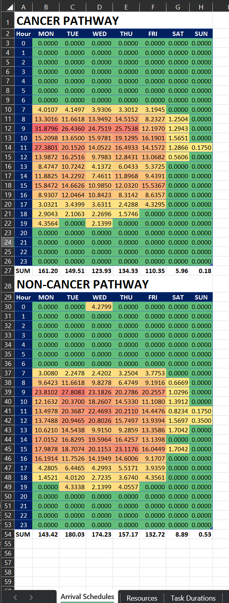

The Excel Configuration File
Parameters are fed into the simulation program using named ranges and tables in an Excel workbook.
Arrival Schedules
Arrival schedules are defined separately for cancer-pathway and non-cancer-pathway specimens. The arrival schedule for each pathway is defined in a table in the “Arrival Schedules” worksheet, with one cell for each hour of the week. The value of each cell is the expected number of specimen arrivals in that hour.
{kind=link}
Resources
Resources are defined in the “Resources” worksheet. Each row contains the name of the resource, the days of the week which the resource is available (marked as seven columns of 0/1 entries), and the number of resource units available within each scheduled day, in 30-minute intervals.
{kind=link}
Note: It is currently assumed that the resource allocation for each resource is the same for each scheduled day. Defining a different schedule for a specific day (e.g. Saturday) will require changes to the program design.
Dragging a cell corner to fill the adjacent cells is a quick way of specifying the same resource allocation level for consecutive 30-minute intervals.
Task Durations
Task durations are defined in the worksheet of the same name. Three distributions are supported: Constant, Triangular, and PERT. The Triangular and PERT distributions are three-point (minimum, mode, and maximum) distributions, with the PERT distribution having more weight towards the mode (most likely value) of the distribution compared to the Triangular distribution.
{kind=link}
The time units for each task duration distribution (seconds, minutes, or hours) can be selected from a drop-down menu. For Constant values, the minimum and maximum values (Optimistic and Pessimistic table columns) are ignored.
Runner times (WIP)
Currently ignored by the simulation program (TODO)